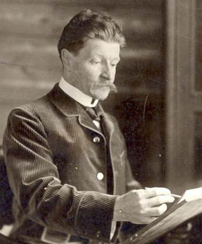

Михаил Врубель
Завершает наш список самых известных русских художников Михаил Врубель, который за свою жизнь создал множество шедевров в различных тематиках. Он занимался росписью Киевского храма, а позже в Москве принялся за создание своего знаменитого ряда «демонических» картин. Творческие метания этого художника не нашли должного понимания у его современников. Лишь спустя несколько десятков лет после смерти Михаила Врубеля искусствоведы отдали ему должное, а Церковь согласилась с его трактовками библейских событий.
К сожалению, личная жизнь художника стала причиной развития у него тяжёлой формы психических расстройств. Звание академика настигло его в доме для сумасшедших, откуда ему уже не судилось выйти. Тем не менее Михаил Врубель успел создать немало удивительных произведений искусства, которые достойны неподдельного восхищения. Среди них особенно стоит выделить картины «Демон сидящий», «Царевна-лебедь» и «Фауст».